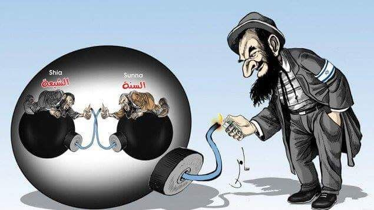

喝多了回来了，先占坑，随后补充。
刚爬起来酒劲还在头昏脑胀，上网乱转发现耍钱的新浪或曰后浪正在奔走相告大批色目含量甚高的重要情报：

若是紧扣本篇标题畅谈文艺理论，划时代大作《摩萨德の世界》第二十六季已经开播。
为啥这么说，还得看多年来伪装成肃慎文艺爱好者的色目情报掮客炒作的风向，早期还没有互联网的时候，就有街头巷尾的流言蜚语以及各种不提供版号的印刷品打广告，说披着南不列颠及北爱尔兰联合王国幌子的系列谍战电影《零零七》其实都是在说摩萨德，只不过为了绿国票房才换个背景。这些非官方海报，与那些「犹太人对中国最最最……最好了」「定居美国的大屠杀幸存者隔三岔五回到上海和哈尔滨省亲」的舆论同时出现。
而到了与时俱进的信息时代，繁荣的简体中文互联网上类似情报就更多了，如车载斗量不可胜数。其它旁证想必人民群众每隔七秒钟就能见到一次，即便记忆只有七秒钟也不至于遗忘。这里就提供已经搜集作为素材的来自美帝灯塔国的证据，见第十九篇设定《昔在上圣昭事百神》脚注「Anglos, Jews …Bad News!
」：


戴着单片眼镜的盎格鲁太君脑壳上的礼帽侧面印刷的是南不列颠及北爱尔兰联合王国的「小米旗」，严密的考虑问题也不过包括澳大利亚新西兰以及其它日不落时期余孽，与百善の新世界「缓则美利坚」「忠犬加拿大」扯不上关系。结合最近白金汉宫赘婿薨掉的新闻，可以与当年「大波兰及立陶宛联合王国」的历史类比，雅德维加女王除了后宫赘婿之外还有胯下三条忠犬或曰盖特曼保驾护航，然而并没有什么卵用，最终还是以「小波兰、马佐夫舍及萨莫吉希亚联合王国」的形式被扫入历史的垃圾堆，直到1919年在巴黎和会上被捡破烂的环保工作者从再生能源工厂料场里翻出来。
在《设定集》注释〔121〕当中说过了，对于「盖特曼（гетман
）」这个来自德语的大波兰及立陶宛联合王国特色军事术语，要翻译成「军委主席」才算信达雅，而体制外的听调不听宣或连调都不听的军阀或匪帮头目，则使用「阿塔曼（атаман
）」称呼。并且有几个军部就有几个军委主席，第十七篇设定《冠由下生乱自上作》及其相关注释中更是以「大不列颠及爱尔兰联合王国」和「帝国议会下属的王国与领地及圣施陶芬王冠领地」举例论证，并进一步结合脑壳里只有红白两色液体的肌肉棒子炒作《水浒传》《金瓶梅》的素材，阐述军部与足协之间壹壹对应的双射关系，以及从足协主席到军委主席这条「南山必胜客捷径」。
而在《设定集》当中使用「柏林迪纳摩」、在《异闻录》当中使用「北京国安」，都是本位面历史上真实存在的大手情报机构外围产业的命名方式。前者伴随着苏修解体东欧变色之后克格勃斯塔西的解散，已经消失或者失去其代表间谍特务卧底岗位职责的含义了，而后者仍然屹立在世界东方：
但是，百足之虫死而不僵，就在那百善の新世界美帝灯塔国，借尸还魂转世重生的剧情出现了：
这个角色，会同时出现在《设定集》《异闻录》当中。前者正文中已经暗示过百善の新世界「花旗足协」采用「倒计时」「单刀赴会」之类划时代竞技创新与万恶的旧大陆坚决划清界限，背后都蕴涵着充沛的政治和意识形态内容并引领了激烈的政治和意识形态斗争新动向。后者正文中则明确提及这个字眼，但是由于情节推进的缘故，还没到局势失控时导演反过来一个国际长途电话打给制片人「休斯敦，我们有麻烦了」的地步。
蛛丝马迹可以参考今天（其实是昨天）发表的四条广播，尤其是《三次元续命擂台如火如荼，二次元孝子争霸紧锣密鼓》这一条。